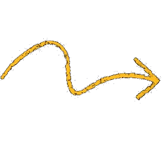
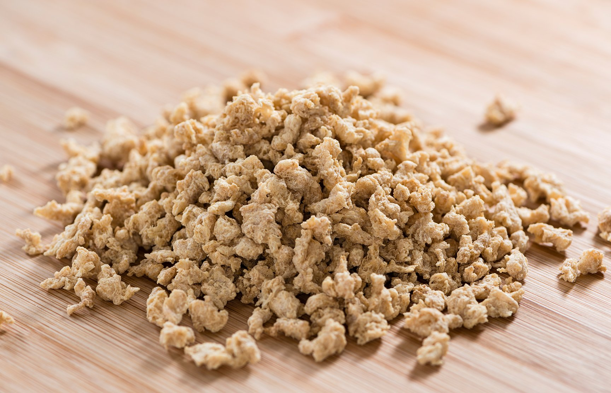

Texturized Soy Protein



How it is obtained
Non-GMO Texturized Soy Protein (TVP) is obtained through thermoplastic extrusion of high-protein defatted soy flour, derived from mechanically pressed soy (Glycine max L. Merrill). Oil extraction is performed exclusively through an expeller press (mechanical pressing), without the use of chemical solvents such as hexane, resulting in a clean-label, hexane-free ingredient. Being a dehydrated product, it is easy to store and transport.
Health Benefits
- Minimum 50% protein content
- Low in sodium
- High in dietary fiber
- Contains natural bioactive components (isoflavones)
Applications
- Meat substitute and extender in formulated products
- Veggie burgers, fillings and Bolognese-style sauces
- Processed meat products: burgers, sausages and nuggets
- Stuffed pasta such as cannelloni and ravioli
- Formulations for vegan and vegetarian diets